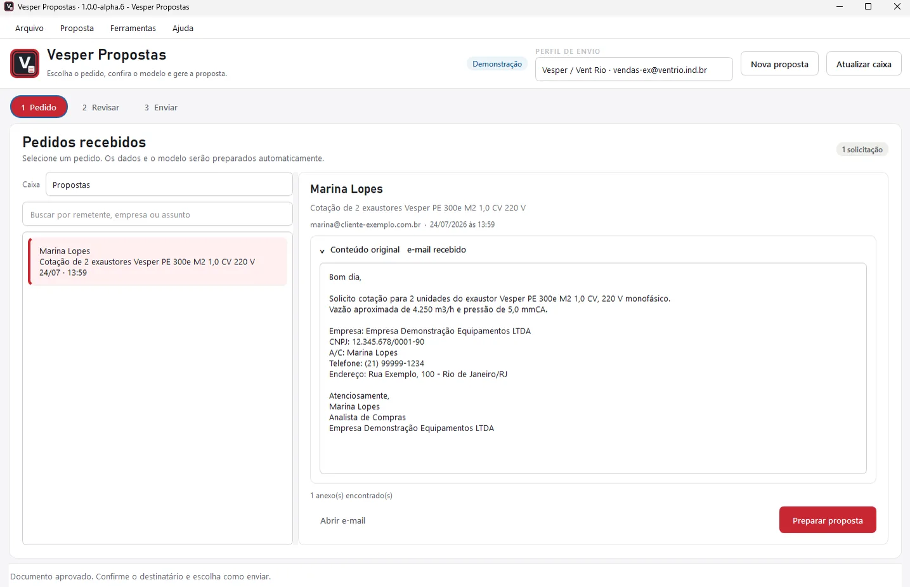
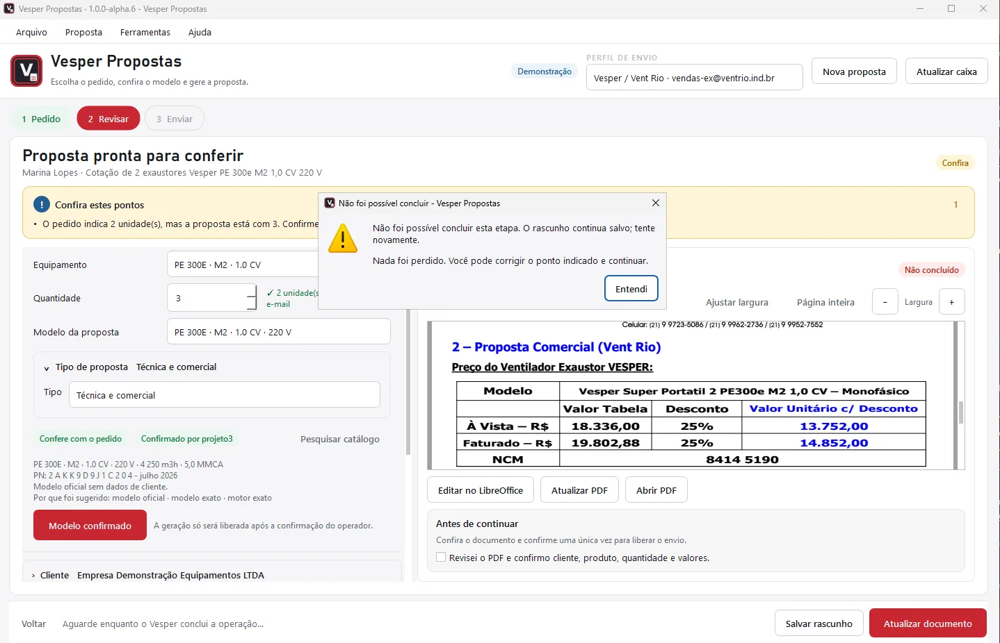
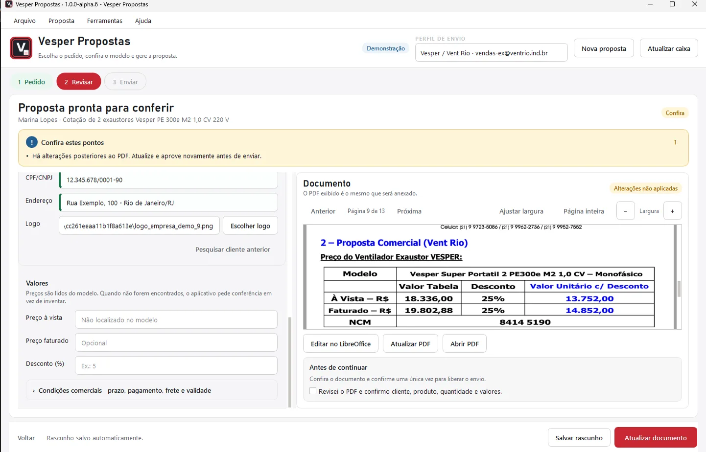
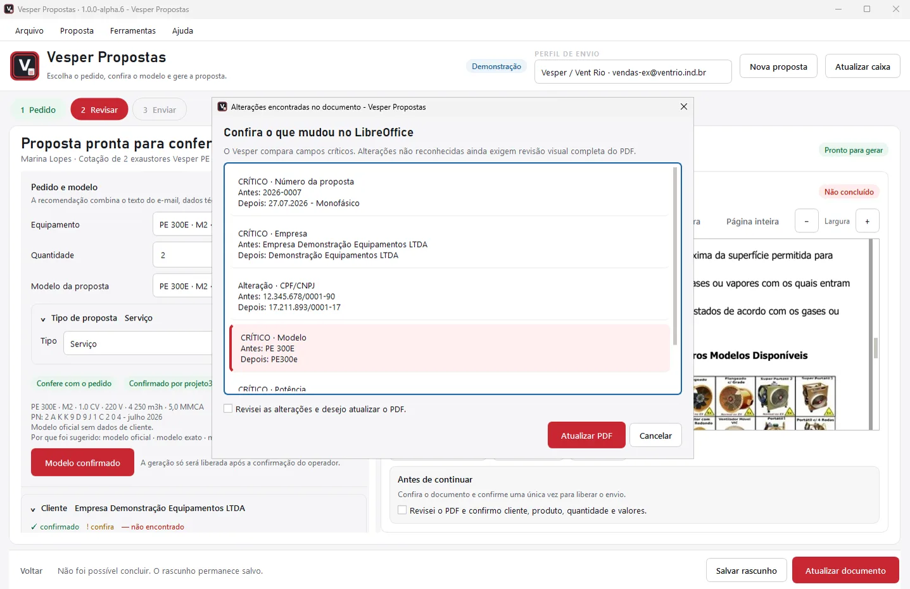
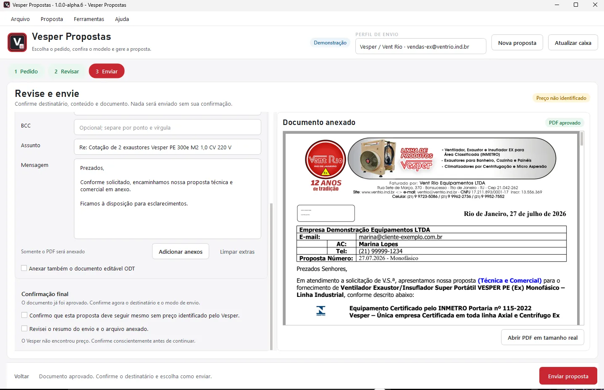

Problem
Finding templates, copying email data, reusing documents and preparing messages created manual steps and risked using the wrong customer, template, attachment or document version.
DOCUMENTS AND EMAIL
INTERNAL USEODT/PDF generation with human review
I evolved the proposal workflow into a controlled internal application for request data, customer and template selection, ODT/PDF generation, review, approval, email preparation and history.

WORKFLOW SCREENS




My work
I observed the existing process, gathered requirements with Commercial users, then developed, deployed, trained and supported the solution used by four professionals.
Privacy
Source code, templates, commercial data and complete integrations remain private.
Finding templates, copying email data, reusing documents and preparing messages created manual steps and risked using the wrong customer, template, attachment or document version.
Request reading, customer/equipment identification, template selection, ODT/PDF generation, history, preview, human approval and email preparation.
Python and PySide6 organize the interface; SQLite stores history; IMAP/SMTP connect email; LibreOffice converts documents to PDF.
Human supervision
Human review remains mandatory before the external effect; the workflow also preserves who prepared, approved and sent the proposal.
Next evolutions
Formal template versioning, cycle metrics, approved ERP integration and role-based approval history.
This case presents the architecture, demonstration screens and results of an internal application in use.